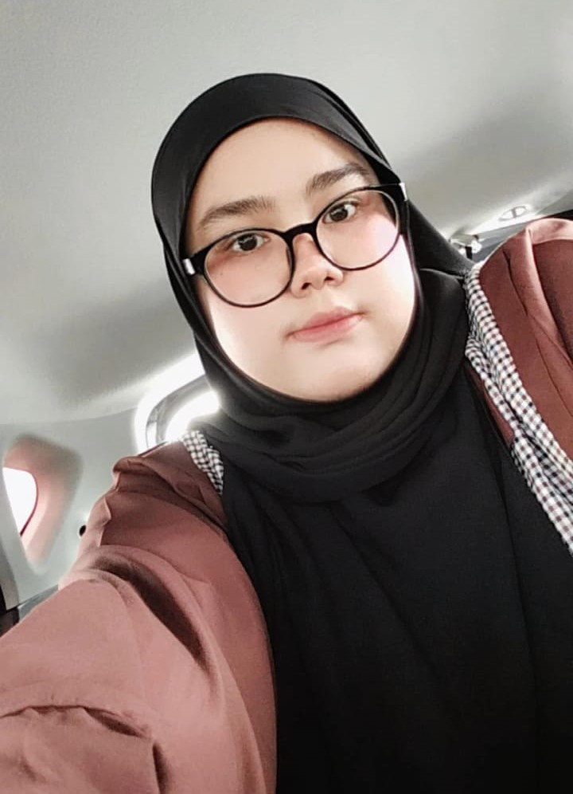

STUDY HARD TO ACHIEVE OUR GOAL!.
|

- My Name : Nur Fatin Hannani Binti Zudin.
- Date of Birth : 02/09/2003
- Gender : Female
- Maritial Status : Single
- Country of Birth : Malaysia
- City of Birth : Kelantan
- Religion : Islam
- Blood Type : A
- Email : nurfatinhannani276@gmail.com
I am the first child of two siblings.I live in Taman Jannati, Pasir Puteh, Kelantan.Pasir Puteh District is a district in Kelantan, Malaysia. The town of Pasir Putih is situated on the bank of Semerak River, about 30 kilometers to the south of Kota Bharu. Pasir Puteh district borders Besut District, Terengganu to its south-east. I started my school life at Cherang Ruku National Primary School, Pasir Puteh, Kelantan and then moved to Kampung Tasek National Primary School.In 2017 I attended Sungai Petai National Secondary School and I sat for the SPM exam in 2020. In that year it was very challenging for me because our country is facing the COVID-19 pandemic.Currently, I am an undergraduate student at the University of Kedah or better known as UiTM Kedah. In addition, I am also an undergraduate student in the field of Information Science (Honours) Library Management and I am a 2nd semester student in the field.